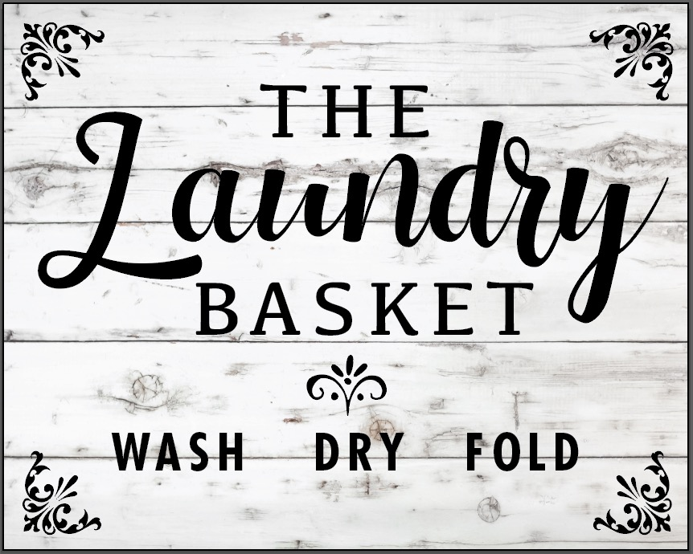
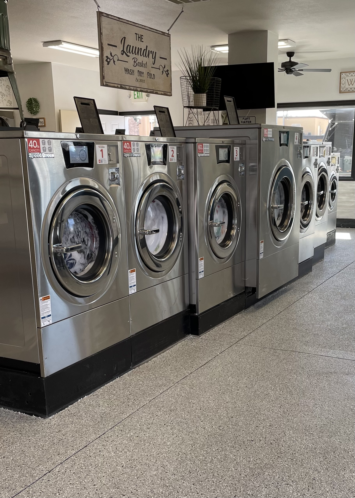
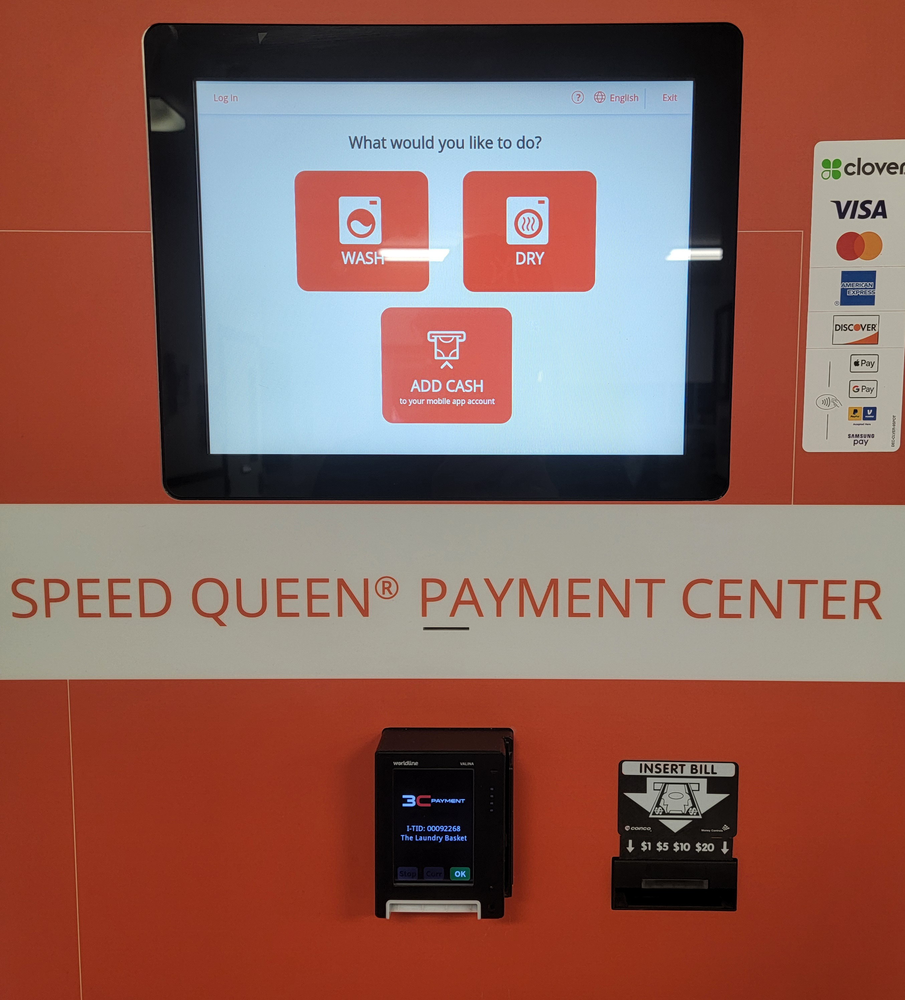
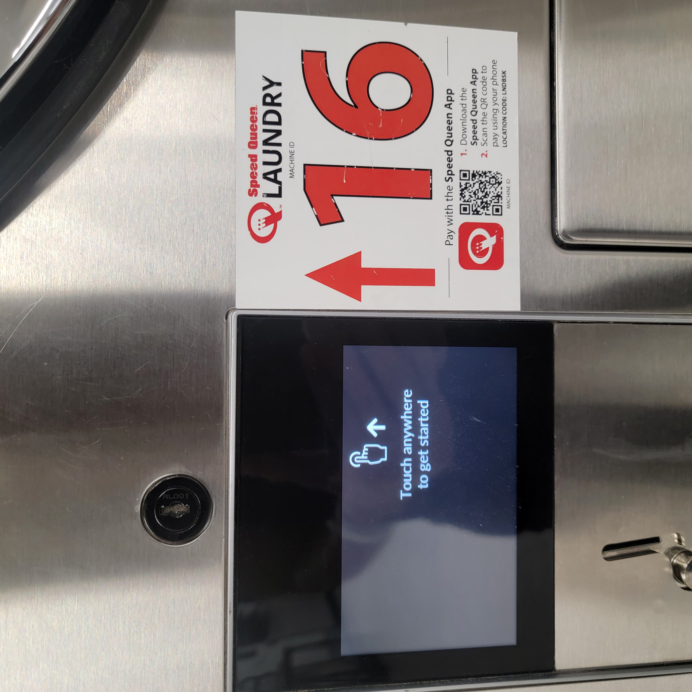
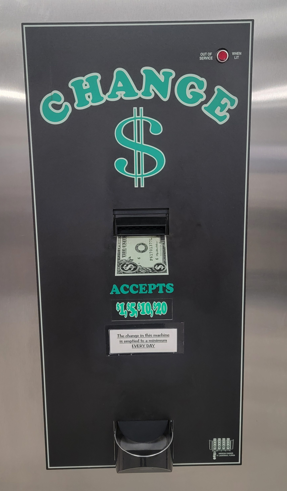

Welcome to Our Laundromat

Choose Service
About Us
Location has 15 Washers & 15 dryers
WASHERS
- one 80lb capacity washer
- two 60lb capacity washers
- Five 40lb capacity washers
- Five 30lb capacity washers
- Two 20lb capacity washers
DRYERS
- one 75lb capacity dryer
- four 30lb capacity dryers
- ten 45lb capacity dryers

Use the speed queen app
Our location uses the speed queen payment system. You will be able to select washers and dryers and the type of cycle through the speed queen app.
Choose the link below that applies to your mobile device.
Google play store or Samsung devices, Apple Devices, Xiaomi Devices.

Wash Cycle Cost
| Wash Type & Duration | 20 lb | 30 lb | 40 lb | 60 lb | 80 lb |
|---|---|---|---|---|---|
| Normal - 22 minutes | $3.50 | $4.50 | $5.50 | $7.50 | $9.50 |
| Synthetics - 20 | $3.50 | $4.50 | $5.50 | $7.50 | $9.50 |
| Delicates - 19 | $3.50 | $4.50 | $5.50 | $7.50 | $9.50 |
| Colors - 30 | $4.50 | $5.50 | $6.50 | $8.50 | $10.50 |
| Whites - 31 | $4.50 | $5.50 | $6.50 | $8.50 | $10.50 |
| Mix - 30 | $4.50 | $5.50 | $6.50 | $8.50 | $10.50 |
| Woolens - 18 | $3.50 | $4.50 | $5.50 | $7.50 | $9.50 |
| Bedding - 35 | $5.00 | $6.00 | $7.00 | $9.00 | $11.00 |
| Hot Wash - 30 | $4.50 | $5.50 | $6.50 | $8.50 | $10.50 |
| Warm Wash - 30 | $4.50 | $5.50 | $6.50 | $8.50 | $10.50 |
| Cotton - 31 | $4.50 | $5.50 | $6.50 | $8.50 | $10.50 |
| High Speed Spin - 13 | $3.50 | $4.50 | $5.50 | $7.50 | $8.50 |
| Rinse the Machine - 1 | $0.25 | $0.25 | $0.25 | $0.25 | $0.25 |
| Deep Clean - 44 | $5.50 | $6.50 | $7.50 | $9.50 | $11.50 |
Normal A basic wash meant for common fabrics and everyday clothing. Uses a strong agitation to deep clean heavily-soiled cottons, linens, towels and other durable items.
Synthetics A milder version of the Normal cycle. Protects fabrics from wrinkling, stretching and pilling. Great for rayon, knit and polyester garments.
Delicates A slow and gentle wash for your delicate fabrics and lightweight items. Perfect for sheers, bras, lace and other handwash-only items.
Colors A basic wash for your everyday colored clothing that wrinkles easily, like jeans. Protects bright- and dark-colored garments from fading or bleeding color.
Whites A deep-cleaning wash to brighten your white fabrics. Great for durable whites that need to stay white, like t-shirts, underwear, white jeans, or table linens.
Mix A cold wash for any mixture of fabrics, such as whites and colors in the same load. Great for when you need to wash different types of garments in one wash cycle.
Woolens A slow, cold wash that cleans your washable wool material clothing. Also safe for delicate garments that need the extra protection offered by a gentle cycle.
Delicates A slow and gentle wash for your delicate fabrics and lightweight items. Perfect for sheers, bras, lace and other handwash-only items.
Bedding A heavy-duty wash for your sheets, comforters, blankets, rugs and other big and bulky items.
Hot Wash A very hot wash for hard-to-remove dirt on sturdy fabrics. Use this wash for disinfecting items, such as dish towels and washcloths
Warm Wash A warm wash for moderately dirty laundry that does not require the extra power of a hot wash. Washing with warm water reduces wrinkles and prevents shrinkage.
Cotton A heavy-duty wash that cleans and disinfects your 100% cotton fabrics, such as t-shirts, sweatshirts and linens.
High Speed Spin Remove excess water from your bulky laundry with a high speed spin so items dry faster. Great for durable, non-delicate clothing and larger items like towels.
Rinse the Machine This is a short cycle in which the basket is rinsed and drained, removing any residue that may be remaining from the previous cycle, such as excess detergent.
Deep Clean A robust sanitary cycle with the deepest clean on the toughest soil
Payment options
You can pay using the app or simply pay with quaters at the machine.

Dryer wall

Change machine

spacer
Contact us
Contact Information
Email: Stanthony@southfreemontcarwash.com
Phone: (208) 530-6283
Address: 225 E Yellowstone Hwy, St Anthony, ID 83445
Send a Review
We welcome your feedback, comments, and reviews. Please fill out the form below to get in touch with us.